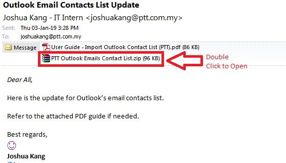
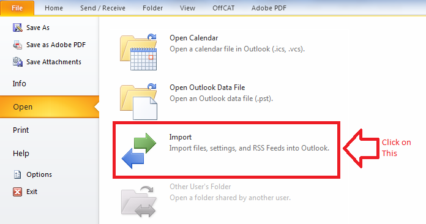

User Guide
Step by step User Guide on how to Import or Update Outlook Email Contact List
Step 1:
Download and Open the .zip contact file.

Step 2:
Extract (Drag and Drop) the file to Desktop (or any preferred location).
Step 3:
Next go back to Outlook, click on
File > Open > Import.

Quote of the day: live life